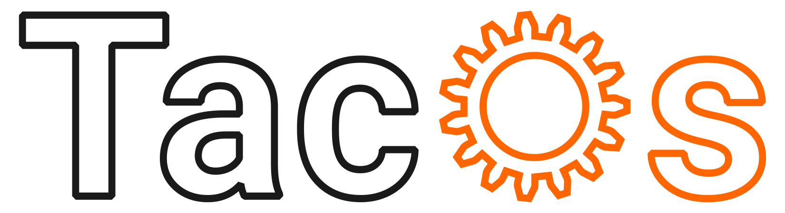

Start
Raporty
Obsługa
Użytkownicy
Logi
Dodaj zgłoszenie
Sprawdź zgłoszenie
Poradniki
Dziennik zmian
Wersja Demo
Obsługa
zgłoszeń
ID
Status
Tytuł
Zgłaszający
Utworzono
Zmodyfikowano
Zamknięto
6
W toku
Wysoki
Nie działa internet
|
Brak dostępu do Internetu
ukryte
27.02.2025 13:02
27.02.2025 13:35
---
7
Nowy
Średni
Monitor nie uruchamia się
|
Problem z monitorem
ukryte
27.02.2025 13:23
27.02.2025 13:23
---
5
Oczekujący
Niski
Brak zdjęcia w artykule
|
Błąd na stronie internetowej
ukryte
26.02.2025 15:37
27.02.2025 08:10
---
3 zgłoszeń
Zamknięte zgłoszenia:
ID
Status
Tytuł
Zgłaszający
Utworzono
Zmodyfikowano
Zamknięto
4
Zamknięty
Średni
Głośny szum
|
Problem z komputerem
ukryte
26.02.2025 09:30
27.02.2025 12:39
27.02.2025 12:39
2
Zamknięty
Średni
Komputer nie działa
|
Problem z komputerem
ukryte
23.02.2025 14:03
27.02.2025 11:54
27.02.2025 11:54
3
Zamknięty
Średni
Bluescreen
|
Problem z komputerem
ukryte
23.02.2025 12:48
26.02.2025 16:16
26.02.2025 16:16
1
Zamknięty
Średni
Nie działa
|
Problem z komputerem
ukryte
20.02.2025 11:07
26.02.2025 16:15
26.02.2025 16:15
4 zamkniętych zgłoszeń